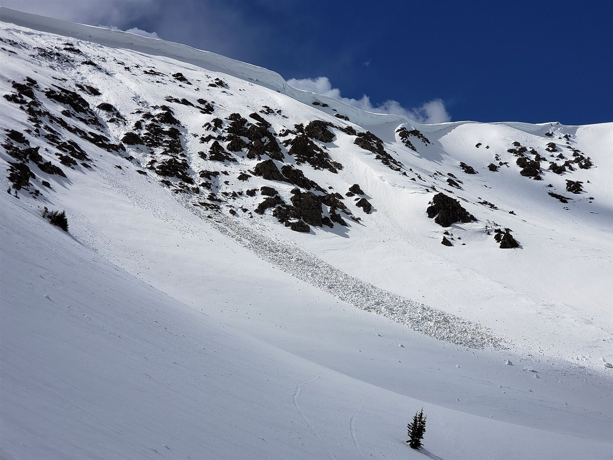

Flujos de detritos y magma
Una ladera parece lo más sólido del mundo, hasta que deja de serlo. Nieve, barro o ceniza caliente pueden ponerse en movimiento y avanzar como un líquido a la velocidad de un auto en la ruta. Estos flujos de gravedad son mezclas de sólidos y fluidos, y comparten una misma idea: si la pendiente vence a lo que sostiene el material, la montaña fluye.
Para un bloque sobre una pendiente de ángulo θ, la gravedad tira hacia abajo con g sen θ, y la fricción frena con μ g cos θ, siendo μ el coeficiente de fricción. El bloque acelera si el primero gana (un cálculo propio de mecánica básica):
Los flujos granulares son más complicados que un bloque, pero la idea se mantiene. En la nieve se ve bien: las avalanchas son posibles en cualquier pendiente de más de 30°, y la mayoría ocurre entre 30° y 45°; en pendientes más empinadas, la nieve se desliza sola y regularmente [1].
Según el Centro Nacional de Datos de Nieve y Hielo de Estados Unidos, una capa nueva depositada rápidamente sobre la nieve vieja puede hacer que una placa débil se fracture, y el riesgo es mayor durante una tormenta de nieve o justo después [1]. Las personas disparan el 90 % de los accidentes por avalancha: esquiadores, motos de nieve o escaladores cargan la nieve, y la capa débil de abajo colapsa [1]. Una avalancha muy grande en América del Norte puede liberar 100 000 metros cúbicos de nieve [1], y en todo el mundo mueren más de 150 personas por año por esta causa [1].

La alfombra sobre el piso encerado: una capa de nieve firme sobre una capa débil se parece a una alfombra sobre un piso encerado. Parece estable hasta que alguien la pisa en el lugar justo. Entonces, lo que resbala no es solo lo que pisaste, sino toda la alfombra.
«Lahar» es una palabra indonesia para una mezcla caliente o fría de agua y fragmentos de roca que baja por las laderas de un volcán y suele entrar en un valle fluvial [2]. El Servicio Geológico de Estados Unidos dice que parece una masa de concreto húmedo en movimiento [2]. Lo más peligroso es que crece: incorpora rocas, suelo, vegetación e incluso edificios y puentes, y puede sumar agua derritiendo nieve y hielo o absorbiendo ríos y lagos [2]. Los lahares voluminosos suelen crecer a más de 10 veces su tamaño inicial, y en zonas empinadas pueden superar los 200 km/h [2]. Al llegar a tierras bajas frenan y empiezan a depositar lo que llevan [2].
La noche del 13 de noviembre de 1985, una erupción del Nevado del Ruiz, en Colombia, generó lahares que bajaron por el río Lagunillas [3]. Armero estaba a 45 kilómetros del volcán, construida sobre depósitos de lahares antiguos, y el barro llegó unas dos horas después de la erupción, a unos 20 km/h en promedio (un cálculo propio) [3]. Murieron 23 000 personas en la ciudad y más de 25 000 en toda la erupción [3]. Lo más duro es que dos horas alcanzaban para subir a terreno alto, si la gente hubiera sido avisada a tiempo [3].
Son mezclas de alta densidad de bloques de lava, pómez, ceniza y gas volcánico, que bajan a gran velocidad por las laderas, por lo general siguiendo los valles [4]. La mayoría tiene dos partes: un flujo basal de fragmentos gruesos, pegado al suelo, y una nube turbulenta de ceniza que sube por encima [4]. Sus velocidades típicas superan los 80 km/h, y sus temperaturas van en general de 200 °C a 700 °C [4]. Pueden derribar o arrastrar casi todo lo que encuentran y provocar incendios [4]. Son una corriente de densidad, pariente del agua fría que se mete bajo el aire tibio de una habitación (un comentario propio).
Un fluido que no es un fluido: ninguno de estos flujos tiene una viscosidad única. Son mezclas cuya resistencia cambia con la concentración de sólidos y con la velocidad, como los fluidos no newtonianos y las suspensiones. Eso los hace difíciles de modelar y hace muy valiosos los sistemas de alerta (un comentario propio).
Nieve, barro y ceniza caliente siguen la misma lógica: cuando la gravedad vence a lo que sostiene el material, este fluye. Lo que cambia es la mezcla y sus consecuencias: una placa de nieve que resbala, un lahar que crece a su paso, una nube ardiente que baja por un valle. Armero mostró que entender estos flujos no alcanza si el aviso no llega a tiempo.
Pregunta para la comunidad: Un lahar aumenta su masa a medida que avanza. Pensando en la conservación de la cantidad de movimiento, ¿incorporar material debería frenarlo? ¿Por qué puede seguir siendo tan destructivo?